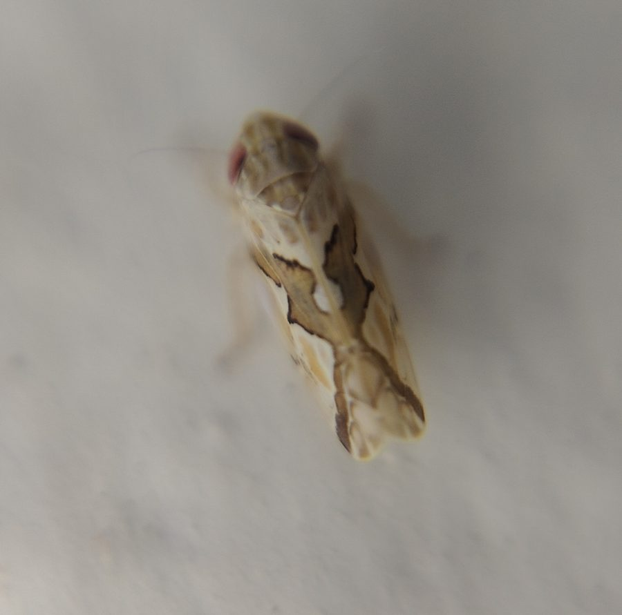

जिग-जैग लीफहॉपरZigzag Leafhopper
Maiestas dorsalis · Cicadellidae · INS-0275

- Scientific name वैज्ञानिक नाम
- Maiestas dorsalis (Motschulsky, 1859)
- Family कुल
- Cicadellidae
- Hindi हिंदी
- जिग-जैग लीफहॉपर
- Local names स्थानीय नाम
- zigzag leafhopper
- Status here यहाँ की स्थिति
- native
- Movement आवागमन
- Resident, here all year
- Known from कहाँ दर्ज
- Others have published records from the wider Awadh–Purvanchal plain, none yet from Basti–Ayodhya अवध–पूर्वांचल से दूसरों के प्रकाशित अभिलेख, बस्ती–अयोध्या से अभी नहीं
- IUCN IUCN
- not evaluated
- Review समीक्षा
- not yet reviewed
When to look कब देखें
Present all year. साल भर मौजूद।
Tell it apart from इनसे अलग पहचानें
Connections रिश्ते
- feeds on धान · Paddy
Documented relationships from the profiles; the web grows as profiles are written.
जिग-जैग लीफहॉपर / Zigzag Leafhopper
Maiestas dorsalis (Motschulsky, 1859) — Cicadellidae
जिग-जैग लीफहॉपर — धान की फसल का एक बहुत छोटा और फुर्तीला पत्ती फुदका है जिसे इसके पंखों पर बनी टेढ़ी-मेढ़ी (जिग-जैग) भूरी धारियों से पहचाना जाता है। यह धान की पत्तियों का रस चूसता है जिससे पत्तियों पर बारीक सफेद-पीले धब्बे पड़ जाते हैं। रस चूसने के अलावा यह धान में 'ऑरेंज लीफ' और 'टुंग्रो' जैसी घातक विषाणुजनित (वायरल) बीमारियों को एक पौधे से दूसरे पौधे में फैलाता है।
Quick Identification त्वरित पहचान
| Feature | Description |
|---|---|
| Wing pattern | Distinctive brown to reddish-brown zigzag longitudinal band running along the folded forewings |
| Body form | Slender, elongate-elliptic leafhopper with smoothly rounded crown tapering towards apex |
| Coloration | Whitish-grey to pale yellowish-ochraceous ground colour contrasting with bold dark zigzag stripes |
| Eyes | Dark brownish multifaceted compound eyes situated laterally on the rounded head |
| Feeding behavior | Rests along the upper leaf blades of rice, hopping swiftly sideways when approached |
Small, slender, pale leafhopper instantly recognised by the bold, dark brown zigzag pattern running lengthwise down its folded wings.
Field tip: Look on the upper surfaces of rice leaves during early tillering; the prominent zigzag line on the back distinguishes it from all other hoppers.
हिंदी: छोटा हल्का पीला-सफेद फुदका जिसकी बंद पंखों वाली पीठ पर भूरे रंग की टेढ़ी-मेढ़ी (ज़िग-ज़ैग) लकीर बनी होती है। यह पत्ते पर बैठता है और छेड़ने पर तेजी से बगल में भागता है।
Morphology आकारिकी
Biometrics from open entomological literature:
| Feature | Characteristic | Source |
|---|---|---|
| Body shape | Slender, elongate-subcylindrical cicadellid contour tapering gracefully posteriorly | Literature |
| Vertex | Subtriangular crown with rounded anterior margin, pale ochraceous with subtle dark spots | Literature |
| Forewing markings | Subhyaline with a conspicuous dark brown to ferruginous zigzag band across clavus and corium | Literature |
| Hind legs | Elongated jumping legs equipped with multiple rows of fine, sharp spines along tibiae | Literature |
| Typical dimension | Measurement not available in consulted open sources. | Open sources |
The adult leafhopper is small and slender, with a streamlined profile. The head is obtusely produced in front, with the vertex slightly longer in the middle than against the eyes. The ground colour is pale creamy-white to greyish-ochraceous. The pronotum is smooth and pale, with faint longitudinal vittae. The forewings are subhyaline, marked conspicuously with a continuous dark brown or reddish-brown zigzag band that extends from the base of the clavus to the wing apex, forming an inverted W-shaped or serrate pattern when the wings are folded at rest. Hind tibiae bear diagnostic rows of fine movable spines used for jumping. Nymphs are pale yellowish with faint brownish markings.
हिंदी: इसका शरीर पतला और नाव जैसा लंबा होता है। सिर का अगला हिस्सा हल्का गोल और उभरा होता है। पंखों पर गहरे कत्थई रंग की टेढ़ी-मेढ़ी लकीर होती है जो अंग्रेजी के डब्लू (W) जैसी दिखती है। पिछली टांगों पर कूदने वाले कांटे होते हैं।
Behaviour & Ecology व्यवहार और पारिस्थितिकी
Unlike delphacid planthoppers that crowd the stem base near the water line, the zigzag leafhopper prefers the upper foliage, resting and feeding openly along the upper leaf blades and tender green tillers. Using its delicate stylets, it pierces the epidermal and mesophyll tissues, extracting plant sap. When disturbed, it moves with characteristic cicadellid agility, dodging rapidly around to the underside of the leaf or leaping vigorously into the air. Adults are phototactic and fly readily to artificial light traps during warm, humid nights.
हिंदी: यह तने के बजाय धान की ऊपरी पत्तियों पर धूप में बैठना पसंद करता है। खतरा देखकर यह पत्ते के दूसरी तरफ घूम जाता है या तेजी से छलांग लगा देता है। रात के समय यह रोशनी वाले बल्बों की तरफ आकर्षित होता है।
Life Cycle / Phenology जीवन चक्र
Breeds actively during the warm kharif season from July through October across eastern Uttar Pradesh. Females deposit delicate, elongate-oval eggs individually into the soft spongy tissues of the leaf blade midribs and leaf sheaths using their serrated ovipositor. Eggs hatch in about a week. The nymphs pass through five instars over two to three weeks, actively hopping and feeding on the same foliage as adults. Multiple overlapping generations occur until harvest, after which surviving adults disperse to wild graminoids on field bunds and ditch banks to overwinter.
हिंदी: बरसात के दिनों में मादा पत्ती की नस के भीतर अंडे देती है। लगभग दो से तीन हफ्तों में बच्चे पांच बार केंचुल बदलकर वयस्क बन जाते हैं। धान कटने के बाद यह मेड़ों पर उगी जंगली घास पर चली जाती है।
Host Plants or Prey आहार
A specialized phytophagous sap-sucker primarily associated with graminoids. Its major economic host is cultivated Paddy (Oryza sativa). Alternative hosts that support the pest between crop cycles include wild rice (Oryza rufipogon), sawan grass (Echinochloa colona), Bermuda grass (Cynodon dactylon), and various wetland grasses growing along irrigation canals.
हिंदी: इसका मुख्य आहार धान का पौधा है। इसके अलावा यह दूब घास, सावां और नहरों के किनारे उगने वाली अन्य जलीय घासों का रस चूसकर अपना गुजारा करता है।
Predators / Natural Enemies शत्रु
Natural populations are kept in check by diverse farmland predators and parasitoids. Minute mymarid and trichogrammatid wasps parasitize eggs inside leaf tissues. Dryinid wasps parasitize nymphs, forming a dark sac-like thylacium on the hopper's body. Generalist predators, including wandering lynx spiders, long-jawed orb-weaving spiders (Tetragnathidae), predatory mirid bugs, and damselflies, actively hunt nymphs and adults across the crop canopy.
हिंदी: धान के खेतों में पाई जाने वाली मकड़ियां, ड्रैगनफ्लाई और शिकारी कीड़े इसे पकड़कर खाते हैं। इसके अलावा बहुत छोटी परजीवी ततैया इसके अंडों के अंदर अपने बच्चे पालती हैं जिससे वे नष्ट हो जाते हैं।
Agricultural / Human Relevance कृषि प्रासंगिकता
Although direct sap feeding can cause leaf yellowing and stippling under high densities, the primary economic threat of Maiestas dorsalis lies in its ability to transmit destructive plant viruses, notably Rice Orange Leaf Disease and Rice Tungro Bacilliform Virus. Even small populations of leafhoppers can transmit disease to healthy rice nurseries, leading to stunted plants, orange-yellow discoloured leaves, reduced tillering, and empty panicles. Recommended management strategies in rice pest advisories emphasize synchronous planting across villages, avoiding excessive nitrogen fertilization that produces succulent susceptible foliage, light trapping to monitor adult flights, and preserving predatory spider communities.
हिंदी: हालांकि यह सीधे रस चूसकर भी नुकसान पहुंचाता है, लेकिन इसका सबसे बड़ा खतरा धान में 'ऑरेंज लीफ' और 'टुंग्रो' जैसी बीमारियां फैलाना है। इसके नियंत्रण के लिए समय पर एक साथ रोपाई करनी चाहिए, संतुलित खाद देनी चाहिए और रात को लाइट ट्रैप लगाना चाहिए।
Expected Locally स्थानीय रूप से अपेक्षित
Not a field record. Written from published accounts for eastern Uttar Pradesh. No confirmed local sighting yet — if you have seen it, that is what the atlas needs.
अभी तक स्थानीय पुष्टि नहीं। यह विवरण प्रकाशित स्रोतों से है, किसी अवलोकन से नहीं।
Common in irrigated paddy fields, nursery beds, and grassy wetland borders throughout eastern Uttar Pradesh. Observers in Basti and Ayodhya should inspect the upper leaves of young rice crops between July and October.
GBIF holds published records from the wider Awadh–Purvanchal plain, none yet from Basti–Ayodhya.
A first local record for the atlas would be a clear photograph showing diagnostic features, accompanied by date, time, and precise location coordinates sent through the project's About page.
हिंदी: यह बस्ती और अयोध्या के धान के खेतों में पत्तियों के ऊपर आसानी से बैठा मिल सकता है। पंखों पर बनी टेढ़ी-मेढ़ी भूरी लकीर वाले इस फुदके की फोटो खींचकर एटलस को भेजें।
Distribution वितरण
Global range: Widespread across tropical and subtropical Asia, from India and Sri Lanka through Southeast Asia to Japan and northern Australia.
In India: Recorded from all major rice-growing states across northern, eastern, and southern India.
In Uttar Pradesh: Distributed throughout the paddy-cultivating plains, particularly in canal-irrigated and wetland tracts.
In Basti district / eastern UP: Documented across all rice-growing blocks in eastern Uttar Pradesh based on state agricultural university pest survey reports.
हिंदी: यह भारत, श्रीलंका, जापान और पूरे दक्षिण-पूर्व एशिया के धान क्षेत्रों में पाया जाता है। उत्तर प्रदेश के सभी धान उगाने वाले मैदानी जिलों में इसकी उपस्थिति है।
Research Questions शोध प्रश्न
- What proportion of Maiestas dorsalis populations in eastern UP carry the Rice Orange Leaf phytoplasma during the monsoon nursery phase?
- How does the presence of wild Oryza rufipogon patches along wetland margins maintain viral reservoirs between rice cropping seasons? / क्या जंगली धान के पौधे इस कीड़े को बीमारी फैलाने के लिए सुरक्षित ठिकाना देते हैं?
- What is the comparative predation efficiency of lynx spiders versus mirid bugs on zigzag leafhoppers in lowland paddy?
- A schoolchild can look at a leafhopper resting on a rice leaf to see if there is a distinct brown zigzag line down its back / क्या कोई बच्चा धान के पत्ते पर बैठे फुदके की पीठ पर टेढ़ी-मेढ़ी लकीर देखकर उसे पहचान सकता है?
- How does synchronous community transplanting reduce disease transmission rates across adjacent village holdings?
हिंदी: क्या गांव भर में एक साथ धान रोपने से इस कीड़े द्वारा फैलने वाली बीमारी रुकती है? क्या बच्चे इसकी पीठ का जिग-जैग निशान पहचान सकते हैं?
Similar Species मिलती-जुलती प्रजातियाँ
| Species | How to tell apart | हिंदी | |
|---|---|---|---|
| White-backed Planthopper \ | Sogatella furcifera | Delphacid planthopper with bright white stripe down the back; lives at the base of stems rather than upper leaves | सफेद पीठ वाला फुदका तने के निचले हिस्से पर रहता है और उसकी पीठ पर सीधी सफेद पट्टी होती है, टेढ़ी-मेढ़ी नहीं |
| Nephotettix virescens | [[green_leafhopper\ | Green leafhopper]] with vibrant bright green body and black apical wing spots; lacks brown zigzag stripe | हरा पत्ती फुदका चमकीले हरे रंग का होता है जिसके पंखों के छोर पर काले धब्बे होते हैं |
Field rule: Small, slender, pale leafhopper found on upper rice foliage, bearing a bold, dark brown zigzag longitudinal stripe down its folded wings.
हिंदी: धान की ऊपरी पत्तियों पर रहने वाला छोटा फुदका जिसकी पीठ पर भूरे रंग की साफ टेढ़ी-मेढ़ी (ज़िग-ज़ैग) लकीर बनी हो।
Taxonomy & Classification वर्गीकरण
Original description. Motschulsky (1859), Études Entomologiques, vol. 8, p. 110; described under the basionym Deltocephalus dorsalis.
Subspecies. Monotypic species. Formerly treated in agricultural literature under Inazuma dorsalis or Recilia dorsalis.
Family and order placement. Belongs to the leafhopper family Cicadellidae (subfamily Deltocephalinae), order Hemiptera, class Insecta.
Phylogenetic notes. Placed within the tribe Deltocephalini and genus Maiestas following phylogenetic revision of Old World deltocephaline leafhoppers by Webb and Viraktamath (2009).
IUCN status rationale. Not currently evaluated on the IUCN Red List of Threatened Species.
हिंदी: इसका वैज्ञानिक विवरण मोत्शुलस्की ने 1859 में दिया था। पुराने साहित्य में इसे डेलटोसेफेलस या इनाजुमा भी कहा गया है। यह सिकाडेलिड्डी कुल का सदस्य है।
Photo Gallery फोटो गैलरी
No photos yet — add field photos to media/species/zigzag_leafhopper/ and run node scripts/sync_photos.js.
Photos needed आवश्यक फोटो
- [ ] Adult resting on rice leaf showing dark brown zigzag wing stripe (पत्ते पर बैठा वयस्क जिसमें जिग-जैग लकीर दिखे)
- [ ] Side view showing head shape and spiny jumping hind legs (बगल का दृश्य जिसमें कूदने वाली टांगें दिखें)
- [ ] Rice plant showing yellow stippling damage on leaves (पीले धब्बों वाली धान की पत्ती)
References संदर्भ
- Original description: de Motschulsky, V. I. (1859). Insectes des Indes orientales, et de contrées analogues. Études Entomologiques, 8, 25–118. (as Deltocephalus dorsalis).
- Distant, W. L. (1908). The Fauna of British India, Including Ceylon and Burma: Rhynchota. Vol. 4. Taylor & Francis, London. (as Deltocephalus dorsalis).
- Webb, M. D. & Viraktamath, C. A. (2009). Annotated check-list, generic key and new species of Old World Deltocephalini leafhoppers with emphasis on the Indian fauna (Hemiptera: Auchenorrhyncha: Cicadellidae). Zootaxa, 2163(1), 1–64.
- National Institute of Plant Health Management & Directorate of Plant Protection, Quarantine and Storage. (2014). AESA Based IPM Package for Rice. Department of Agriculture & Cooperation, Ministry of Agriculture, Government of India. URL: https://niphm.gov.in/IPMPackages/Rice.pdf.
- GBIF Occurrence Data — Maiestas dorsalis, India (2025).
Source file: species/fauna/insects/zigzag_leafhopper.md